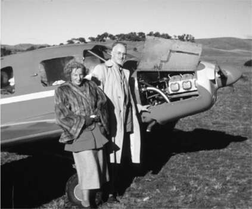
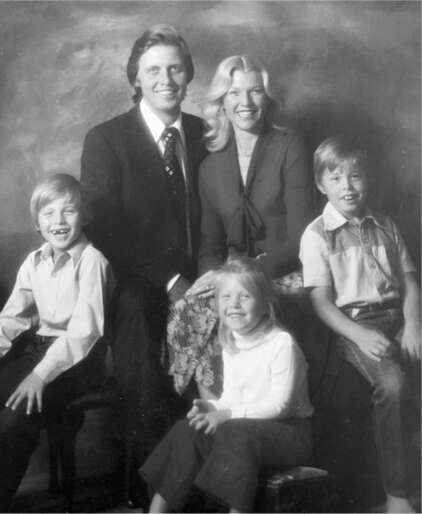
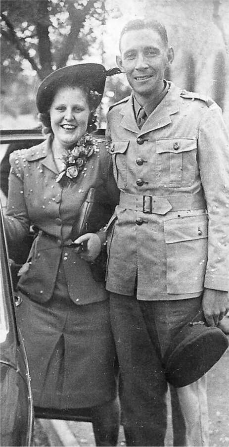

Sở thích mạo hiểm của Elon Musk là một nét tính cách gia đình. Về mặt này, ông giống ông ngoại mình, Joshua Haldeman, một nhà thám hiểm ưa mạo hiểm với những quan điểm kiên định, lớn lên trong một trang trại trên vùng đồng bằng cằn cỗi ở miền trung Canada. Ông học các kỹ thuật trị liệu thần kinh cột sống ở Iowa, sau đó trở về quê hương gần Moose Jaw, nơi ông huấn luyện ngựa và chữa bệnh bằng phương pháp này để đổi lấy thức ăn và chỗ ở.
Cuối cùng ông cũng mua được trang trại riêng, nhưng lại mất nó trong thời kỳ suy thoái những năm 1930. Vài năm sau đó, ông làm đủ nghề, từ cao bồi, diễn viên rodeo đến công nhân xây dựng. Niềm đam mê bất tận của ông chính là phiêu lưu. Ông kết hôn rồi ly hôn, lang thang khắp nơi bằng tàu chở hàng, và thậm chí còn trốn trên một con tàu vượt đại dương.
Việc mất trang trại đã hun đúc trong ông tư tưởng dân túy, và ông tham gia tích cực vào một phong trào có tên là Đảng Tín dụng Xã hội, một đảng chủ trương cấp tín dụng miễn phí cho người dân sử dụng như tiền tệ. Phong trào này mang màu sắc bảo thủ, nguyên thủy, pha lẫn tư tưởng bài Do Thái. Lãnh đạo đầu tiên của đảng ở Canada đã lên án “sự tha hóa các giá trị văn hóa” bởi vì “một số lượng lớn người Do Thái đang nắm giữ các vị trí kiểm soát.” Haldeman sau đó vươn lên trở thành chủ tịch hội đồng quốc gia của đảng.
Ông cũng tham gia một phong trào khác có tên là Kỹ trị, với niềm tin rằng chính phủ nên được điều hành bởi các chuyên gia kỹ thuật chứ không phải các chính trị gia. Phong trào này từng bị cấm tạm thời ở Canada do phản đối việc đất nước tham gia Thế chiến II. Haldeman đã công khai thách thức lệnh cấm bằng cách đăng quảng cáo trên báo ủng hộ phong trào.
Có một lần, ông muốn học khiêu vũ, và đó là cách ông gặp Winnifred Fletcher, một người phụ nữ cũng ưa mạo hiểm như ông. Năm 16 tuổi, bà làm việc tại tờ Moose Jaw Times Herald, nhưng luôn mơ ước trở thành vũ công và diễn viên. Vì vậy, bà đã lên tàu đến Chicago, rồi New York. Khi trở về, bà mở một trường dạy nhảy ở Moose Jaw, và đó là nơi Haldeman đến học. Khi ông mời bà đi ăn tối, bà trả lời: "Tôi không hẹn hò với học viên." Thế là ông bỏ lớp học và mời bà đi chơi lần nữa. Vài tháng sau, ông hỏi: "Em sẽ cưới anh khi nào?" Bà đáp: "Ngày mai."
Họ có bốn người con, bao gồm hai cô con gái sinh đôi, Maye và Kaye, sinh năm 1948. Trong một chuyến đi, ông nhìn thấy tấm biển "Bán" trên một chiếc máy bay Luscombe một động cơ nằm trên cánh đồng của một nông dân. Không có tiền mặt, nhưng ông đã thuyết phục người nông dân đổi chiếc xe hơi của mình lấy máy bay. Đó là một quyết định khá bốc đồng, vì Haldeman không biết lái máy bay. Ông đã thuê người lái máy bay đưa mình về nhà và dạy mình cách lái.
Gia đình họ được biết đến với cái tên "Gia đình Haldeman Bay", và ông được một tạp chí về chỉnh hình mô tả là "có lẽ là nhân vật đáng chú ý nhất trong lịch sử của những người hành nghề chỉnh hình biết lái máy bay", một lời khen có phần hạn hẹp nhưng chính xác. Họ mua một chiếc máy bay Bellanca một động cơ lớn hơn khi Maye và Kaye được ba tháng tuổi, và hai đứa trẻ được gọi là "cặp song sinh bay".
Với quan điểm dân túy bảo thủ khác thường, Haldeman tin rằng chính phủ Canada đang kiểm soát quá mức cuộc sống của người dân và đất nước đã trở nên yếu đuối. Vì vậy, vào năm 1950, ông quyết định chuyển đến Nam Phi, nơi vẫn đang bị cai trị bởi chế độ phân biệt chủng tộc. Họ tháo rời chiếc Bellanca, đóng thùng và lên tàu chở hàng đến Cape Town. Haldeman muốn sống ở sâu trong đất liền, nên họ bay đến Johannesburg, nơi hầu hết người da trắng nói tiếng Anh chứ không phải tiếng Afrikaans. Nhưng khi bay qua Pretoria gần đó, hoa phượng tím đang nở rộ, và Haldeman tuyên bố: "Đây là nơi chúng ta sẽ ở lại."
Khi Joshua và Winnifred còn nhỏ, một tay bịp bợm tên là William Hunt, tự xưng là "Farini vĩ đại", đã đến Moose Jaw và kể những câu chuyện về một "thành phố mất tích" cổ xưa mà ông ta đã nhìn thấy khi băng qua sa mạc Kalahari ở Nam Phi. "Tay bịp này đã cho ông tôi xem những bức ảnh rõ ràng là giả, nhưng ông tôi lại tin và quyết tâm tìm lại thành phố đó", Musk nói. Một khi đã đến Châu Phi, gia đình Haldeman đã thực hiện một chuyến đi kéo dài một tháng vào Kalahari mỗi năm để tìm kiếm thành phố huyền thoại này. Họ tự săn bắn để kiếm thức ăn và ngủ cùng súng để chống lại sư tử.
Gia đình này có một phương châm: "Sống mạo hiểm - một cách cẩn thận". Họ thực hiện những chuyến bay đường dài đến những nơi như Na Uy, đồng hạng nhất trong cuộc đua xe dài mười hai nghìn dặm từ Cape Town đến Algiers, và là những người đầu tiên lái một chiếc máy bay một động cơ từ Châu Phi đến Úc. "Họ đã phải tháo ghế sau để lắp thêm thùng nhiên liệu", Maye sau này nhớ lại.
Sự liều lĩnh của Joshua Haldeman cuối cùng đã khiến ông phải trả giá. Ông đã thiệt mạng khi một người mà ông đang dạy bay đã đâm vào đường dây điện, khiến máy bay lật và rơi. Cháu trai của ông, Elon, khi đó mới ba tuổi. "Ông ấy biết rằng những cuộc phiêu lưu thực sự luôn đi kèm với rủi ro", anh nói. "Rủi ro tiếp thêm năng lượng cho ông ấy."
Haldeman đã truyền tinh thần đó cho một trong hai cô con gái sinh đôi của mình, mẹ của Elon, Maye. "Tôi biết rằng tôi có thể chấp nhận rủi ro miễn là tôi đã chuẩn bị sẵn sàng", bà nói. Khi còn là một sinh viên trẻ, bà học rất giỏi các môn khoa học và toán học. Bà cũng sở hữu vẻ ngoài nổi bật. Cao ráo, mắt xanh, gò má cao và cằm thon gọn, bà bắt đầu làm người mẫu từ năm mười lăm tuổi, trình diễn thời trang tại các cửa hàng bách hóa vào sáng thứ Bảy.
Vào khoảng thời gian đó, bà gặp một chàng trai trong khu phố, người cũng có vẻ ngoài nổi bật, dù theo kiểu hào hoa và phong trần.
Errol Musk là một nhà thám hiểm và thương nhân, luôn tìm kiếm cơ hội mới. Mẹ ông, Cora, đến từ Anh, nơi bà học hết lớp 9, làm việc tại một nhà máy sản xuất vỏ máy bay chiến đấu, sau đó lên một con tàu tị nạn đến Nam Phi. Tại đó, bà gặp Walter Musk, một nhà mật mã học và sĩ quan tình báo quân sự, người đã làm việc ở Ai Cập trong các kế hoạch đánh lừa quân Đức bằng cách triển khai vũ khí và đèn pha giả. Sau chiến tranh, ông không làm gì khác ngoài việc ngồi im lặng trên ghế bành, uống rượu và sử dụng kỹ năng mật mã của mình để giải ô chữ. Vì vậy, Cora rời bỏ ông, trở về Anh cùng hai con trai, mua một chiếc Buick, rồi quay lại Pretoria. "Bà là người phụ nữ mạnh mẽ nhất mà tôi từng gặp", Errol nói.
Errol có bằng kỹ sư và làm việc trong lĩnh vực xây dựng khách sạn, trung tâm mua sắm và nhà máy. Bên cạnh đó, ông thích phục chế ô tô và máy bay cũ. Ông cũng tham gia chính trị, đánh bại một thành viên người Afrikaner của Đảng Quốc gia ủng hộ chế độ phân biệt chủng tộc để trở thành một trong số ít thành viên nói tiếng Anh của Hội đồng Thành phố Pretoria. Tờ Pretoria News ngày 9 tháng 3 năm 1972 đã đưa tin về cuộc bầu cử này với tiêu đề "Phản ứng chống lại giới cầm quyền".
Giống như gia đình Haldeman, ông yêu thích bay lượn. Ông đã mua một chiếc Cessna Golden Eagle hai động cơ, dùng để chở các đoàn làm phim truyền hình đến một khu nghỉ dưỡng mà ông đã xây dựng trong rừng. Trong một chuyến đi vào năm 1986, khi đang tìm cách bán chiếc máy bay, ông đã hạ cánh xuống một đường băng ở Zambia, nơi một doanh nhân người Panama gốc Ý đề nghị mua nó. Họ đã đồng ý về giá cả, và thay vì nhận tiền mặt, Errol được nhận một phần số ngọc lục bảo được sản xuất tại ba mỏ nhỏ mà doanh nhân này sở hữu ở Zambia.
Sau khi giành độc lập, Zambia có một chính phủ da đen, nhưng bộ máy hành chính không hoạt động, nên mỏ không được đăng ký. “Nếu đăng ký, bạn sẽ chẳng còn gì, vì người da đen sẽ lấy hết,” Errol nói. Ông chỉ trích gia đình Maye phân biệt chủng tộc, điều mà ông khẳng định mình không hề có. “Tôi không có ác cảm gì với người da đen, nhưng họ khác tôi,” ông nói trong một cuộc điện thoại lan man.
Errol, người chưa từng sở hữu cổ phần nào trong mỏ, đã mở rộng kinh doanh bằng cách nhập khẩu ngọc lục bảo thô và cho cắt tại Johannesburg. “Nhiều người mang đến cho tôi những gói hàng ăn cắp,” ông nói. “Trong những chuyến đi nước ngoài, tôi bán ngọc lục bảo cho các tiệm kim hoàn. Đó là việc làm lén lút, vì không có gì hợp pháp.” Sau khi thu về lợi nhuận khoảng 210.000 đô la, việc kinh doanh ngọc lục bảo của ông sụp đổ vào những năm 1980 khi người Nga tạo ra ngọc lục bảo nhân tạo trong phòng thí nghiệm. Ông mất tất cả số tiền kiếm được từ ngọc lục bảo.
Errol Musk và Maye Haldeman bắt đầu hẹn hò khi còn là những thiếu niên. Ngay từ đầu, mối quan hệ của họ đã đầy sóng gió. Ông nhiều lần cầu hôn bà, nhưng bà không tin tưởng ông. Khi phát hiện ông lừa dối, bà buồn đến mức khóc suốt một tuần và không ăn uống được gì. “Vì đau buồn, tôi sụt mất 4,5 kg,” bà nhớ lại; điều đó đã giúp bà chiến thắng một cuộc thi sắc đẹp địa phương. Bà nhận được 150 đô la tiền mặt cùng mười vé chơi bowling và trở thành người lọt vào vòng chung kết cuộc thi Hoa hậu Nam Phi.
Khi Maye tốt nghiệp đại học, bà chuyển đến Cape Town để thuyết trình về dinh dưỡng. Errol đến thăm, mang theo một chiếc nhẫn đính hôn và cầu hôn. Ông hứa sẽ thay đổi và chung thủy khi họ kết hôn. Maye vừa chia tay một người bạn trai không chung thủy khác, tăng cân nhiều và bắt đầu lo sợ mình sẽ không bao giờ kết hôn, nên bà đồng ý.
Đêm tân hôn, Errol và Maye đáp chuyến bay giá rẻ đến châu Âu để hưởng tuần trăng mật. Tại Pháp, ông mua những cuốn Playboy, vốn bị cấm ở Nam Phi, và nằm trên chiếc giường nhỏ trong khách sạn xem chúng, khiến Maye rất khó chịu. Những cuộc cãi vã của họ trở nên gay gắt. Khi trở về Pretoria, bà đã nghĩ đến việc ly hôn. Nhưng chẳng bao lâu sau, bà bị ốm nghén. Bà đã mang thai vào đêm thứ hai của tuần trăng mật, tại thị trấn Nice. “Rõ ràng là kết hôn với ông ấy là một sai lầm,” bà nhớ lại, “nhưng giờ không thể thay đổi được nữa.”

Winnifred và Joshua Haldeman

Errol, Maye, Elon, Tosca và Kimbal Musk

Cora và Walter Musk